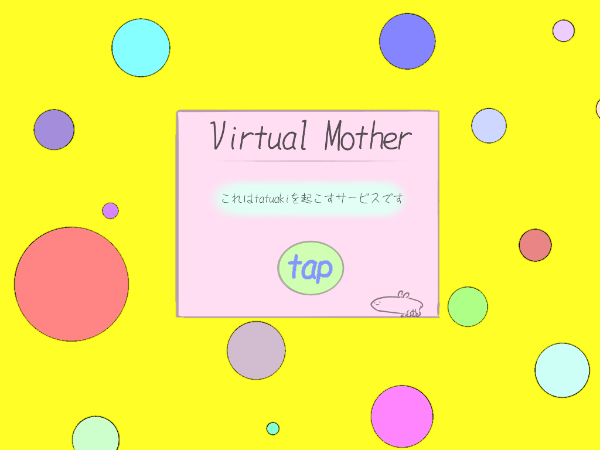

<!DOCTYPE html>
<html lang="ja">
<head>
    <meta charset="utf-8">
    <meta name="viewport" content="width=device-width,initial-scale=1">
    <title>ようこそ - バーチャルお母さん</title>
    <link rel="shortcut icon" href="../static/img/mother.png">
    <link rel="stylesheet" href="../static/css/stylesheet.css">
    <link rel="stylesheet" href="https://use.fontawesome.com/releases/v5.5.0/css/all.css" integrity="sha384-B4dIYHKNBt8Bc12p+WXckhzcICo0wtJAoU8YZTY5qE0Id1GSseTk6S+L3BlXeVIU" crossorigin="anonymous">
</head>
<body class="color">
<div class="bubble-1">
<div class="bubble-2">
<div class="bubble-3">
<div class="bubble-4">
<div class="bubble-5">
<div class="bubble-6">
<div class="bubble-7">
<br>
<article class="tap"><a href="/authorize"><input type="button" value ="tap" onclick="/authorize"></a></article>
<br>
</div>
</div>
</div>
</div>
</div>
</div>
</div>
<!--
<a href="/authorize">
    
</a>
-->
<!--
    <header>
        <span class="title">バーチャルお母さん</span>
    </header>
    <article>
        <p class="twitter_url"><a href="https://twitter.com/virtual_mother/" target="_blank">お母さんのTwitter&nbsp;<i class="fab fa-twitter-square"></i></a></p>
<br>
<br>
<br>
    <div class="post_text">Twitterアカウント認証した方はこちら</div>
    <div class="post_text">→<span><a href="/user">ユーザー画面に進む</a></span></div>
<br>
    <div class="post_text">Twitterアカウント認証していない方はこちら</div>
    <div class="post_text">→<a href="/authorize"></a></div>
<br>
<br>
<br>
    </article>

    <footer>
        <div>&copy; 2018 Virtual Mother</div>
    </footer>
-->
</body>
</html>

